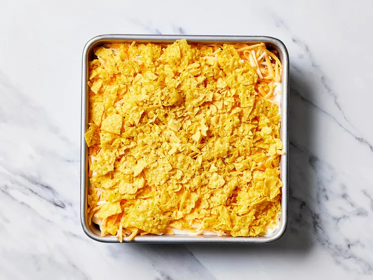

This taco pie is a quick, easy meal that is very filling. Some people will also top it with regular taco toppings such as lettuce, tomatoes, black olives, etc. It also is great as leftovers for lunches. Serve with taco sauce.
Gather all ingredeients
Lay crescent dough flat on the bottom of a 9-inch square pan and bake according to package directions.
Meanwhile, heat a large skillet over medium-high heat. Cook and stir ground beef in the hot skillet until browned and crumbly, 5 to 7 minutes. Stir in taco seasoning.
Spoon beef filling into prebaked crust; add a layer of sour cream and sprinkle with shredded cheese. Top with crushed nacho chips.
Bake in the preheated oven until cheese has melted, about 10 minutes.
Serve and enjoy!